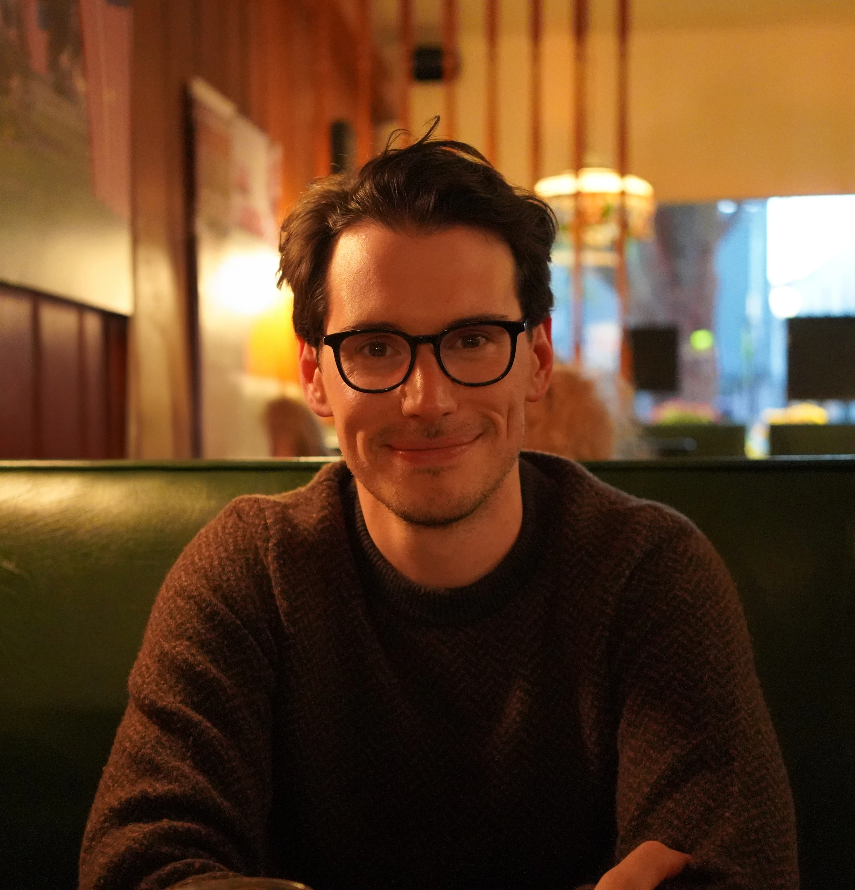

Be here for your life.
7-9:30pm Tuesdays in Victor, NY
Next cohort dates: April 7th, 21st · May 5th, 19th · June 2nd, 16th, 30th
Apply to JoinThe Present Man Project exists for one reason: because life only happens in the present moment. And too many men are missing it.
We spend years half-here, in our heads instead of our bodies, thinking instead of feeling, distracted instead of engaged, busy but not alive. And while we drift, we miss the very things we care about most: our partners, our children, our purpose, ourselves.
Some men come in because something has shifted and they can't quite name it. Some come in carrying something heavy: a loss, a hard season, a version of themselves they're ready to leave behind. Some come in because life is full and they can sense there's a level beneath it they haven't touched yet.
The people we love want our presence more than our perfection. They want us.
This group is an invitation to return: to your breath, to your body, to what's real right now.
This can be scary. Which is why we do it together, with the support of the group.
Here we practice presence as a path to power—not dominance, but inner power. The kind that makes you grounded, clear, connected, and unshakeably alive. We witness each other honestly, hold one another accountable, and expand our capacity to stay present in the moments that matter.
This work is not about becoming a better man someday. It's about becoming a present man now, in your home, your work, your relationships, your own skin.
Because the more present you are, the more life you get to live.
The ability to stay present under pressure. Through breathwork and somatic practice, you build the capacity to stay in your body when things get hard, instead of shutting down, blowing up, or disappearing.
Honest reflection from men who will tell you what they actually see. The feedback here comes from guys who show up the same Tuesday you do and have no reason to tell you what you want to hear.
A way to work with the patterns you keep repeating. You'll learn to name what's happening inside you, trace it to its source, and do something different, in the room and at home.
Accountability between sessions. A WhatsApp group and weekly journal prompts keep the practice alive in the days between meetings.
$450/quarter
Every other Tuesday evening in Victor, NY.
The group reopens each quarter: new men can join, current members recommit or step back.
We ask that you not miss more than one session per quarter.
Most men who end up here weren't sure they were the type. They came anyway.
Join The Group
Eli is men's group facilitator and certified breathwork practitioner who has studied with David Elliott in New Mexico and Jesse Torgerson in New York.
As a photographer & video editor—and with an education in Western philosophy—it wasn't until Eli discovered breathwork that he realized he had been living his life entirely inside his head, and that there was another, much more rewarding way of being. The work has been revolutionary in his personal and professional life, and he is passionate about sharing it with others.
"The breathwork sessions that Eli held were powerful and like nothing I have ever experienced. I can say I was pushed out of my comfort zone while still feeling safe. Eli has a unique energy that made our conversations dynamic and lively."
— Jake
With over five years of facilitation experience, Matt has had the honor of witnessing the transformative power of mens work in the lives of participants. He's studied men's work with Jeffrey James Howard (jeffreyjames.coach) and mindfulness with Michael Rempel (michaelrempel.com) both in Boulder, CO.
Outside of men's groups, Matt is a father of two, leads Software Engineering teams and teaches mindfulness meditation. He believes in helping others realize and experience the preciousness of life.
"Matt interjects a genuine love for men's work and his own personal growth. He has solid leadership skills and strength through vulnerability."
— Pinak
"Truly transformative and deeply enriching. The space created by Eli and Matt fostered growth, reflection, and genuine connection. I am incredibly grateful for this opportunity and for the invaluable insights gained throughout the journey."
"The group added a level of depth to my life that I could not have gotten anywhere else."
"It was a rich experience that I am honored to have been a part of. If I didn't take the leap of faith to join I would have missed out on meeting some great men. I loved sharing a circle with them!"
Be the first to know about upcoming events and receive the occasional newsletter.
No one is turned away from my breathwork groups for lack of funds. Donations help make that possible.